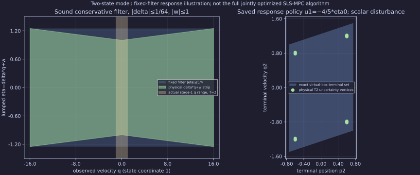

Performance verdict: inconclusive. These are authored two-state T2/4/8 examples, not author-code reproduction or the full jointly optimized SLS-MPC algorithm. Native HiGHS returns numerical LP witnesses; separate rational reconstruction and exact support replay verify the reported policies. Native LP objective is worst terminal absolute velocity; the original toy quadratic is its square.
Full-state observation reconstructs only PAST lumped disturbances. Fixed plans, prescribed feedback, ADF and explicit response formulations share continuous controls and the same stated model within each profile. The sigma5/4 problem is a conservative fixed-filter virtual box: its optimum is an upper bound for the physical uncertain-A problem. The physical T2 optimum, physical returned-policy cost and virtual optimum are distinct.

Physical points are uncertainty vertices; no full winning set, recursive feasibility or continuous safety is inferred. Exact figure inputs and original physical T2 reference.
| Profile | Verified/attempts | Exact virtual worst qT² | LP vars/rows/nnz | Median native port run (ns) |
|---|---|---|---|---|
| T2-sigma1-fixed-plan | 5/5 | 4 | 20/39/77 | 870510 |
| T2-sigma1-fixed-gain | 5/5 | 1 | 20/42/81 | 894885 |
| T2-sigma1-adf | 5/5 | 1 | 20/39/77 | 871209 |
| T2-sigma1-response | 5/5 | 1 | 30/49/103 | 968149 |
| T2-sigma5/4-fixed-plan | 5/5 | 25/4 | 20/39/77 | 855564 |
| T2-sigma5/4-fixed-gain | 5/5 | 24025/4096 | 20/42/81 | 899216 |
| T2-sigma5/4-adf | 5/5 | 9/4 | 20/39/77 | 866250 |
| T2-sigma5/4-response | 5/5 | 9/4 | 30/49/103 | 934415 |
| T4-sigma1-fixed-plan | 5/5 | 16 | 54/99/250 | 1065648 |
| T4-sigma1-fixed-gain | 5/5 | 1 | 54/109/270 | 1195625 |
| T4-sigma1-adf | 5/5 | 1 | 54/99/250 | 1183682 |
| T4-sigma1-response | 5/5 | 1 | 82/127/291 | 1434763 |
| T4-sigma5/4-fixed-plan | 5/5 | 25 | 54/99/250 | 1185567 |
| T4-sigma5/4-fixed-gain | 5/5 | 5558448025/268435456 | 54/109/270 | 1311004 |
| T4-sigma5/4-adf | 5/5 | 4 | 54/99/250 | 1186755 |
| T4-sigma5/4-response | 5/5 | 4 | 82/127/291 | 1507539 |
| T8-sigma1-fixed-plan | 5/5 | 64 | 170/291/1024 | 2486164 |
| T8-sigma1-fixed-gain | 5/5 | 1 | 170/327/1144 | 2860238 |
| T8-sigma1-adf | 5/5 | 1 | 170/291/1024 | 3383144 |
| T8-sigma1-response | 5/5 | 1 | 258/379/931 | 4929795 |
| T8-sigma5/4-fixed-plan | 5/5 | 100 | 170/291/1024 | 2615093 |
| T8-sigma5/4-fixed-gain | 5/5 | 75002239855561056025/1152921504606846976 | 170/327/1144 | 3339773 |
| T8-sigma5/4-adf | 5/5 | 9 | 170/291/1024 | 3965766 |
| T8-sigma5/4-response | 5/5 | 9 | 258/379/931 | 5286338 |
Five alternating repetitions are descriptive. Setup includes parsing/program/registry; port run includes adapter checks. Neither is an isolated LP solve, and batch policy synthesis is not an MPC update latency. A separate Python diagnostic profile does not establish the native limiter. All warmups, native admission/infeasibility probes and process/check outcomes are retained.
Full timings/counts/source identity · Current independent saved-data checks · Complete raw capture, sources and offline checksum manifest. Read the bundled README for complete matrices, bounds, causal law, oracle proof, fixed-filter induction, solver/license/platform/release limits and residual603 criteria. No API/required dependency/library release or publication claim.